Numerical simulation of viscous flow in deformable double porous media¶
Mathematical model¶
We consider a double porous medium which consists of an elastic solid matrix 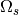 perforated by
a system of channels filled with an incompressible fluid 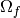 with interface
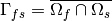. These components are
arranged in a periodic lattice at both the micro- and mesoscopic level. Thus, the porous matrix at the mesoscopic level
can be generated medium can be generated by copies of the microscopic reference unit cell  and, subsequently,
macroscopic body can be generated as alattice of the mesoscopic reference unit cell 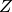, see Fig. 1.
Two small scale parameters 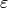 and 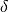 chracterize micro- and meso-porosities.
At the mesoscopic scale, the periodic structure is formed by fluid filled channels occupying domain Om_c^delta
and by domain
and, subsequently,
macroscopic body can be generated as alattice of the mesoscopic reference unit cell 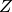, see Fig. 1.
Two small scale parameters 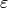 and 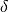 chracterize micro- and meso-porosities.
At the mesoscopic scale, the periodic structure is formed by fluid filled channels occupying domain Om_c^delta
and by domain  which is constituted by a microporous material.
In particular, domain 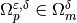 represents micro pores saturated by fluid,
whereas 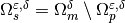 is the skeleton, see Fig. 1..
which is constituted by a microporous material.
In particular, domain 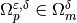 represents micro pores saturated by fluid,
whereas 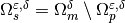 is the skeleton, see Fig. 1..
To summarize the decompositions,
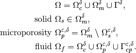
The superscripts and denote the quantities oscillating within the heterogeneous structure with the period equal to the size of the micro- and mesoscopic periodic unit. However, we drop the superscript in following text to simplify the notation.

Fig. 1 Macroscopic domain  and decomposition of microscopic domain and mesoscopic domain .
and decomposition of microscopic domain and mesoscopic domain .
The mechanical behavior of such a structure can be described using the two-level asymptotic homogenization method, (for more detailed explanaition we refer to [Rohan2019]).
The mechanical properties of the deformable matrix are given by elasticity tensor 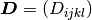 which satisfies the usual symmetries.
The fluid is characterized by viscosity  which is given by a piece-wise constant function,
which is given by a piece-wise constant function,
(1)¶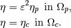
The scaling of the viscosity in micropores 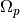 is the standart consequence of the non-slip boundary condition on he pore wall.
The problem of the fluid flow in deformable media at microscopic level is given by the following equilibrium equations and boundary conditions governing displacement of the solid 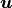 and both the fluid pressure and velocity fields 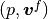:
(2)¶![-\nabla\cdot \Db\eeb{\ub} & = \fb^s, \quad \mbox{ in } \Om_{s}, \\
\nb\cdot \Db\eeb{\ub} & =\nb\cdot\sigmab^f, \quad \mbox{ on } \Gamma_{fs}, \\
\nb\cdot \Db\eeb{\ub} & =\nb\cdot\gb^s, \quad \mbox{ on } \partial_\sigma\Omega_{s}, \\
\ub & =\0b, \quad \mbox{ on } \partial_u\Omega_{s}, \\
-\nabla\cdot(2\eta\eeb{\vb^f}-p\Ib) & =\fb^f, \quad \mbox{ in } \Omega_{f}, \\
\nabla\cdot\vb^f & =0, \quad \mbox{ in } \Omega_{f}, \\
\vb^f & =\dot\ub, \quad \mbox{ on } \Gamma_{fs}, \\
\vb^f-\dot{\tilde{\ub}} & =:\wb, \quad \mbox{ on } \partial_{ext}\Om_{f},](_images/math/8d38d45905f6a3b0e3cc0aa75d8589b505525ffc.png)
where 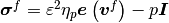 is the fluid stress, 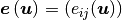
is the strain in the solid with components 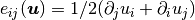, 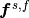
denotes the volume forces in the solid or in the fluid, and 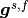 is the surfacetraction stresses acting
on the solid part. The relative fluid velocity 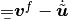 in the fluid-filled pores
is defined whit use of a smooth extention 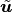 of the dislacement field
from solid to whole domain  .
.
Two-level homogenization¶
Due to the double-porous nature of the medium, we performe two levels of homogenization.
The 1st-level of homogenization concerns the asymptotic analysis 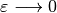 related to the
fluid-structure interaction in microporous structure situated in 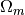.
We apply the standard homogenization techniques to the above problem. It
results in the limit model for , where
is the scale parameter relating the microscopic and macroscopic
length scales. The homogenization process leads to local microscopic problems,
defined within a reference periodic cell , and to the mesoscopic problem describing
the behavior of the homogenized matrix at the mesoscopic level. The mesoscopic
problem involves the homogenized material coefficients which are evaluated
using the solutions of the local problems. The 2nd-level of homogenization deals with upsacling from meso-
to macroscopic scale. It results in the limit model for
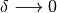 and subsequently in the local mesoscopic problems on
a reference periodic cell , and in the derivation of the homogenized problem at macroscopic level.
Due to linearity of the problem, the microscopic, mesoscopic and macroscopic problems are decoupled.
The local microscopic responses are given by the following sub-problems which are solved within the periodic
reference cell , see Fig. 1, that is decomposed similarly to the decomposition of
domain :
- Find 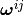, 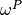 such that for all 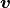 for any 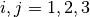
(3)¶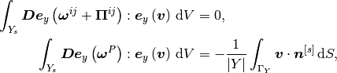
where 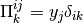.
- Find 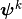, 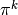 such that for all ,
 satisfying
satisfying
(4)¶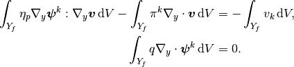
The microscopic sub-problems are solved with the periodic boundary conditions
and 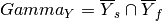 is the interface between solid and fluid part of the cell .
With the characteristic responses obtained by solving local sub-problems,
the homogenized material coefficients 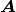, 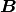, 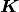 and  can be evaluated
using the following expressions:
can be evaluated
using the following expressions:
(5)¶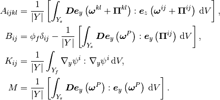
Homogenization - 2nd level¶
At the 2st-level of homogenization, the asymptotic analysis is related to the interaction between the homogenized microporous matrix in and fluid in channels 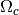 at mesoscopic level. By same upscaling procedure as in 1st level of homogenization, we obtain local mesoscopic problems, defined within a reference periodic cell , where we enter the homogenized coefficients obtained by 1st level homogenization. We also arrive to the global problem describing the behavior of the homogenized matrix at the macroscopic level. The homogenized material coefficients describing whichdescribe behavior at macroscopic level are evaluated using the solutions of the local mesoscopic problems.Due to linearity of the problem, the microscopic, mesoscopic and macroscopic problems are decoupled.
The local mesoscopic responses are given by the following sub-problems which are solved within the periodic
reference cell , see Fig. 1, that is decomposed similarly to the decomposition of
domain :
- Find , such that for all for any
(6)¶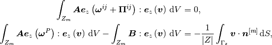
where  .
.
- Find , 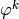 such that for all satisfying
(7)¶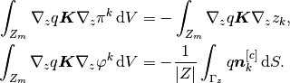
- Find
 , 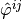 such that for all ,
satisfying
, 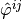 such that for all ,
satisfying
(8)¶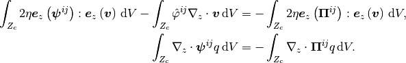
The mesoscopic sub-problems are solved with the periodic boundary conditions and 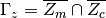 is the interface between the matrix part 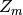 and canal 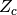.
With the characteristic responses obtained by solving local sub-problems, the homogenized material coefficients 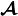, 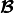, , , , and can be evaluated using the following expressions:
(9)¶![\Acal_{ijkl} & = {1\over \vert Z\vert} \left[ \int_{Z_{m}} \left[\Ab \eebz{\omegab^{kl}
+ \Pib^{kl}}\right]: \eebz{\omegab^{ij} + \Pib^{ij}}\,\dV\right],\\
\Bcal_{ij} & = \phi_c\delta_ij+{1\over \vert Z\vert} \left[\int_{Z_m} \Bb: \eebz{\Pib^{ij}+\omegab^{ij}} \,\dV
- \int_{\Gamma_Z} \nb^{m}\cdot \omegab^{ij} \,\dV\right],\\
\Hcal_{ij} & = {1\over \vert Z\vert} \int_{Z_m} \nabla_z\vphi^j\cdot\Kb\nabla_z\vphi^i\,\dV,\\
\Kcal_{ij} & = {1\over \vert Z\vert} \int_{Z_m} \nabla_z(z_j+\pi^j)\cdot\Kb\nabla_z(z_i+\pi^i)\,\dV,\\
\Pcal_{ij} &= \phi_c\delta_{ij}-{1\over \vert Z\vert}\int_{\Gamma_Z} \pi^i n_j^{m}\, \dS
=\phi_c\delta_{ij}+{1\over \vert Z\vert} \int_{Z_m} \nabla_z\vphi^j\cdot\Kb\nabla_z\vphi^i\,\dV,\\
\Scal_{{ijkl}} &={1\over \vert Z\vert}\left[2\eta\int_{Z_c}\eebz{\psib^{kl}+\Pib^{kl}}:\eebz{\psib^{ij}
+\Pib^{ij}}\,\dV-\int_{Z_c} \hat{\vphi}^{kl}\nabla_z\cdot\Pib^{ij}\, \dV\right],\\
\Mcal &={1\over \vert Z\vert}\left[\int_{Z_m}M\,\dV+ \int_{Z_m} \Bb: \eebz{\omegab^{P}} \,\dV
- \int_{\Gamma_Z} \nb^{c}\cdot \omegab^{P} \,\dV\right].](_images/math/77b98ae500ef7bc3f8c2c27ec469ef6374e30f72.png)
All coefficients are symmetric with respect to indices related to strain and strain rate tensors, i.e. .
The global macroscopic problem is defined in terms of the homogenized
coefficients as: Find the macroscopic displacements and
such that for all  and
and
(10)¶![\int_{\Omega} [\Acalb \eebx{\ub^0} - p^0 \Bcalb^T]: \eebx{\vb^0}\,\dV - \int_{\Omega}\vb^0\cdot\Pcalb^T(\nabla_xp^0-\fb^f) &
- \int_\Omega \vb^0 \Hcalb^T\wb^0\,\dV +\int_{\partial_\sigma\Omega}\bar{\phi}_c\bar{p^0}\nb\cdot\vb^0\,\dV\\
&= \int_{\Omega} \fb^{blk}\cdot\vb^0 \,\dV+\int_{\partial_\sigma\Omega}\bar{\phi}_m\bar{\phi}_s\gb\cdot\vb^0\,\dV,
+ \int_{\Omega} f \cdot \vb \dV,\\
\int_{\Omega} q^0(\Bcalb:\eebx{\dot\ub^0} + \dot p^0 \Mcal) \dV +\int_\Omega (\Kcalb(\nabla_xp^0-\fb^f)-\Pcalb\wb^0)\,\dV
&= -\int_{\partial_w\Omega} q^0 (\bar\phi_m\bar\phi_f\bar w_n^{mic}+\bar\phi_c\bar w_n^{mes}) \,\dV,\\
\int_{\Omega}\eebx{\thetab^0}:\Scalb\eebx{\wb^0+\dot\ub^0}\,\dV+\int_\Omega\thetab^0\cdot\Pcalb(\nabla_xp^0-\fb^f)\,\dV
+\int_\Omega\Hcalb\wb^0 &=\int_{\partial_p\Omega}\bar\phi_c\bar p^0\nb\cdot\thetab^0\,\dV.](_images/math/6ee5617767e07ec4a6201b2e9a1dd5494ed2ce5c.png)
The Dirichlet boundary conditions prescribed for and can be imposed,
(11)¶
The pressure fulfils zero-means conditions in thole domain .
The complementary Neumann-type boundary condition are specfied as follows
(12)¶
For the purpose of this example, we simplify the problem (13). We consider only steady
state of the problem and omitt all volume froces
and and surface tractions . Also we will consider
closed micropores on the whole boundary , i.e. .
The problem (10) becomes:
Find the macroscopic displacements and
such that for all and
(13)¶
Numerical simulation¶
{kind=link}
Fig. 2 Left - geometric representation of microscopic domain; Riht - geometric representation of mesoscopic domain
To run the numerical simulation, download the archive, unpack it in the main SfePy directory and type:
./simple.py example_perfusion_BDB/perf_BDB_mac.py
This invoke the simply.py script which calculates the macroscopic
problem (13) and calls the homogenization engine that solves the
local subproblems for given parameter , viscosity and elastic tensor . First, it solves subproblems (3) and (4)
on microscopic cell (see Fig. 2 left) and
evaluates the homogenized
coefficients (5). Then, using solution from previous step, it solves subproblems
(6)–(8) on mesoscopic cell (see Fig. 2 right)
and evaluates the homogenized coefficients (9). See [CimrmanLukesRohan2019] for more details related
to the SfePy homogenization engine.
The macroscopic sample is fixed on both left and right side, so that no displacements are allowed, see Fig. 3. The defromation is induced due to the flow through porous matrix, as the responce to the prescribed velocity , see (13).
{kind=link}
The resultin macroscopic pressure field  , displacement and the velocity field are depicted in
Fig. 4, where deformation is visualised by deformed wireframe.
, displacement and the velocity field are depicted in
Fig. 4, where deformation is visualised by deformed wireframe.
{kind=link}
References¶
| [Rohan2019] | Rohan E., Turjanicová J., Lukeš V. The Biot–Darcy–Brinkman model of flow in deformable double porous media; homogenization and numerical modelling. Computers and Mathematics with applications, 78(9):3044-3066, 2019, DOI:10.1016/j.camwa.2019.04.004 |
| [CimrmanLukesRohan2019] | Cimrman R., Lukes V., Rohan E. Multiscale finite element calculations in Python using SfePy. Advances in Computational Mathematics, 45(4):1897-1921, 2019, DOI:10.1007/s10444-019-09666-0 |